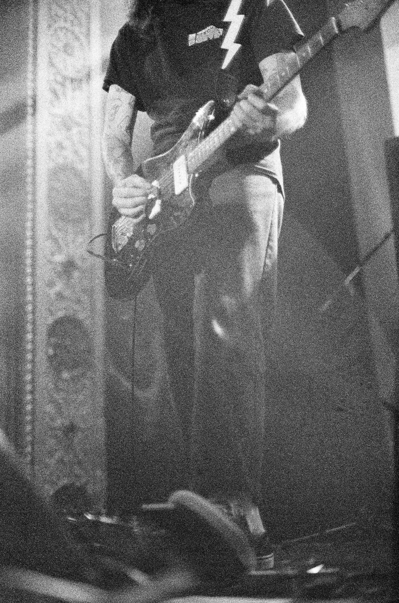
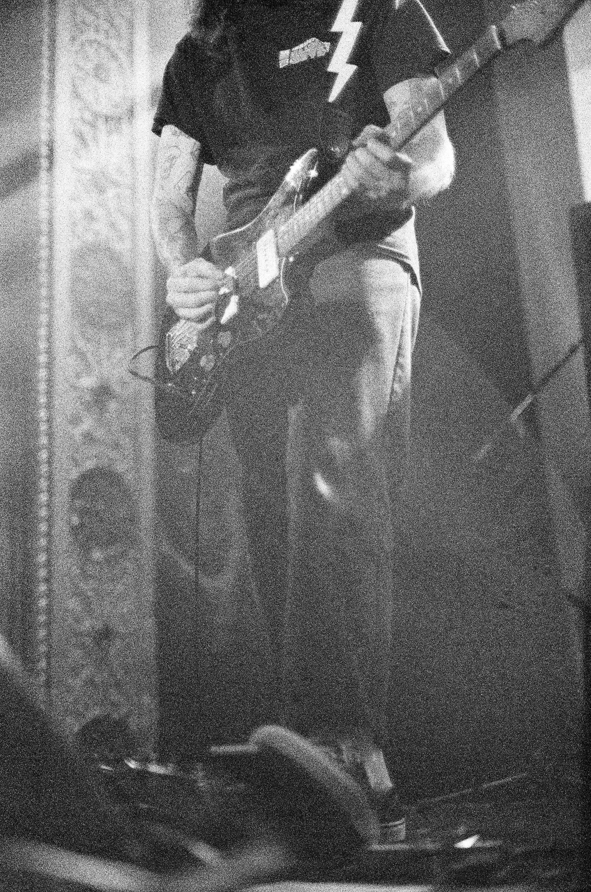

Show Review
Whirr’s Return
Slide Away 2025 || Dylan Clancy
꩜꩜꩜꩜꩜꩜꩜꩜꩜꩜꩜꩜꩜꩜꩜꩜꩜꩜꩜꩜꩜꩜꩜꩜꩜꩜꩜꩜꩜꩜꩜꩜꩜꩜꩜꩜꩜꩜꩜꩜꩜꩜꩜꩜꩜꩜꩜꩜꩜
Covering New York 04.26.2025, Philadelphia 04.27.2025, and Chicago July 22nd 2025


 



Photos taken by Carson Ramirez. A lot of these cropped weird, so go check out his instagram . Also, maybe hit him up for any band shots you need? He deserves it.

Check the instagram stories of @bandofnothing, @thesmithsgrind, @thefuneralparty, and all other whirr/nothing associates.
Check the Whirr subreddit.
Check the Whirr discord.
Search up Whirr on Google.
Report back.
This time I didn’t have to go past step 1—because as I opened my instagram, the first thing that consumed my screen was the announcement of Whirr’s first show in almost a decade. I could feel the blood leave my face as my hand covered my mouth. My professor who was mid-lecture probably thought I received news from the Grim Reaper himself, but dismissed those thoughts as soon as he heard me mumble “no fucking way” inbetween spouts of sporadic laughter. I had bought tickets before I even knew when and where it was and told Carson to pull the flights up.
Carson and I were two of the many other people reacting this way to the announcement of Whirr’s return. Since entering their hiatus in 2015, they have developed a huge following and have received countless praise (and criticism) (we all know) as a result. So people were hype. As a result, in the subsequent days after announcing Slide Away 2025 (specifically the one in New York) as Whirr’s return, they announced another show the day after in Philly—which Carson and I made sure to hit as well. Whirr’s influence to me is immeasurable, they’ve changed my life in ways I can’t explain and ways I could never repay. It’s a long story, one that I’m sure will be written about many times on this site (if not already). For this, however, I wanted to talk about the immense moment and surrealness of Whirr’s return, one that allowed me to live out a dream I thought was certainly dead.
Side note: I'm not going to talk about Whirr’s controversies, or anything else besides my experience with the actual show itself.
You can find a bunch of stuff on that, but I would recommend
this interview
with Nicky from Nothing, and
this interview
with Bassett.
Showtime.
I actually have very little memory of everything leading up to walking into the Brooklyn Paramount, but the gorgeousness of it all felt like a come-to-consciousness moment. Carson and I looked around with cold feet—what were we supposed to do first? Everywhere we looked, there were other people we (parasocially) knew from the scene, as this was the event to be at. Carson and I eventually set up camp near Whirr’s merch stand as we proceeded to take in the moment and people-watch. The crowd had its fair share of youngin’s (including myself), however, most of the people there looked like they were active during Whirr’s heyday in the early 2010s. By active I mean going to shows, as many people had faded swirls somewhere on their body—many of which were most likely conceived in the back of Whirr’s tour van after a show by a guy named Schu. There was no shot of getting merch that night, for the end of the line was extending to different floors of the venue. Carson and I didn’t mind, in fact I bet there was nothing that could’ve brought us down from the high that night.
The moment.
After waiting what felt like days—which was really years—for Whirr’s set, I felt myself enter an unshakable stage of denial. I still couldn’t actually believe this was happening (at this point, Carson and I made our way up to the front of the crowd). After a few minutes of stage breakdown and set up, the room got dark and all the screens in the room turned blue. Slowly, the dancer from Whirr’s “Raw Blue” album cover appeared, slowly dancing to some unmistakable Bassett ambient guitar. It was at this point that I was completely fucked. I kept saying, “No fucking way. Fuck off. What the fuck is even happening? This is bullshit. Brooooooooo.” Stupid shit like that to sort of ground myself in a way. I was shaking and sweating, like I was about to actually pass out. Whirr? 2025? I’m here in New York, with someone that I assured would never see this happen, and it’s happening. I could’ve been in that blue-screen moment forever.
Eventually, the room went black once more, the music cut out, and they finally walked out. The eruption from the crowd was absolutely primal, actually it was almost ancestral the way I bellowed out a roar when I saw them all walk out. The silence that followed was often interrupted by trademark “Free Whirl” shouts and other impulsive, emphatic cheering. Along with the original 5 members of Whirr was newcomer Brian Busch, a friend of the band who found himself beside a handful of different trinkets—most notably a keyboard. It was that keyboard that uttered the first chord to “Mellow,” a chord that, in that moment, wafted over the crowd like shots of heroin and adrenaline. It also shot the lights on, which as you would expect sent myself and the rest of the crowd into another frenzy. Playing “Mellow” was no surprise to Carson and I, as we had seen a snippet of their setlist on Instagram; nonetheless as that first chord was played we reacted the same. We just couldn’t believe it was actually happening. Looking around at each member, I still wasn’t fully convinced that they weren’t some kind of hologram or illusion. The slowed, reverb-drenched chords of the piano were sinking into me through the gasps and jitters of the people around me. Right before I was about to get fully mesmerized, Carson looked at me and said “Devin’s about to play this shit like Bongos,” then BAM—it was like getting a 12-guage to the chest.
It’s really hard to write about the actual show, as you can imagine. I was suffocated by a euphoric weight that burrowed itself in my chest. I was hoping that it would never end, all while knowing that it eventually would. Looking at each of the guys on stage, as ridiculous and weird as it sounds, I noticed they moved in the exact same way as they did on those countless live videos I’ve watched over and over again—which seems juvenile but actually added to the unrealness of all.
As soon as the last chord was strummed and the guys left the stage, I knew it was over. (You may think “No shit dickhead,” but I’ll have you know that Whirr made it seem like they would encore) (Like they would ever do that shit). I kind of just stared around in place for a bit. I wanted to be left completely alone and in silence, but alas I found Carson to whom I lost around the middle of the set. We kind of just looked at each other, analyzing to see if this was indeed real life (thankfully it was), and with that, we just kind of…left. Knowing in less than 24 hours we would get to experience that all over again was probably what kept us from staying at the Paramount until being forcefully removed. Also, I’ll spare the excruciating detail for the Philly and Chicago shows, but if you're wondering...everything I just said was more or less how I felt during those as well.
Post-Chicago and the end of it all.
The other day on July 22nd, I most likely saw Whirr play for the 3rd and last time in my life. I could not be more grateful that the guys in the band, along with everyone involved in the Funeral Party, Nothing, Slide Away (and everyone else I don’t know), pulled together to not only #MakeWhirrPlayAgain, but make them sound better than ever before, make brand new merch, and give back to local foundations and charities. I was able to bring my Mom to see Whirr, which is something I didn’t think I would ever get to say. Genuinely speaking, based on what I’ve read, I still don’t believe the guys in Whirr truly know the impact they’ve had on so many people. That isn’t a slight either—I know the feeling of getting a heartfelt message about your music and how much it means to someone, and internally you’re just like “yeah right buddy,” but this paper should at least give you an idea. As my final parting message I have this: As long as I’ve been a Whirr fan, I told myself that if I heard Wavelength live I would cry. Well, they played Wavelength as their second song back from hiatus and I didn’t cry. But that is okay. Free Whirl forever.